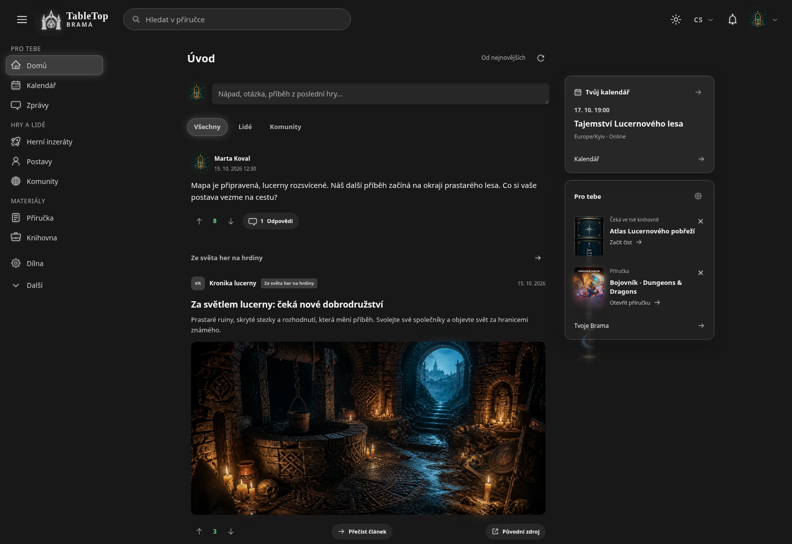
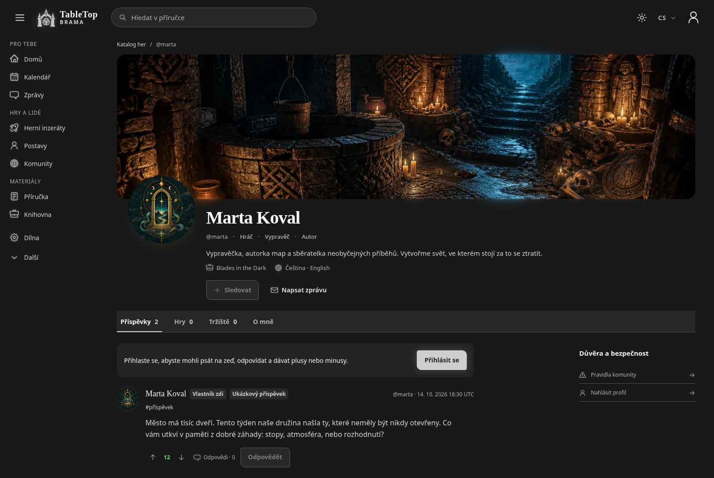
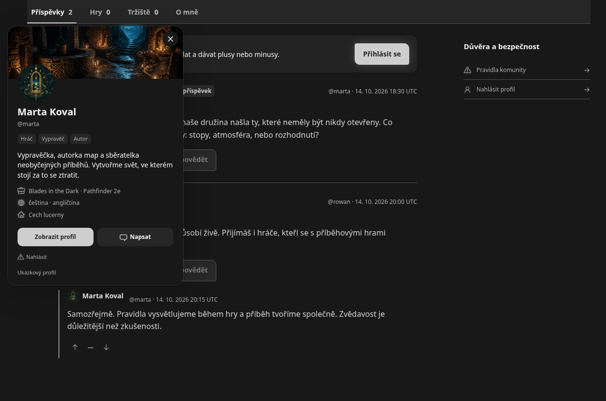
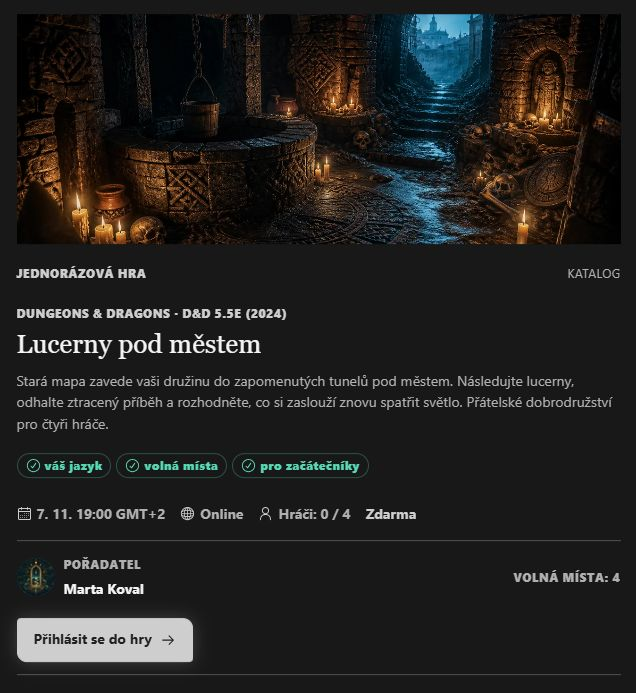
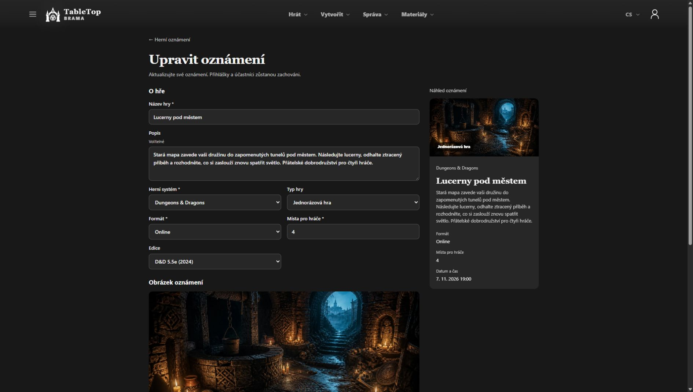
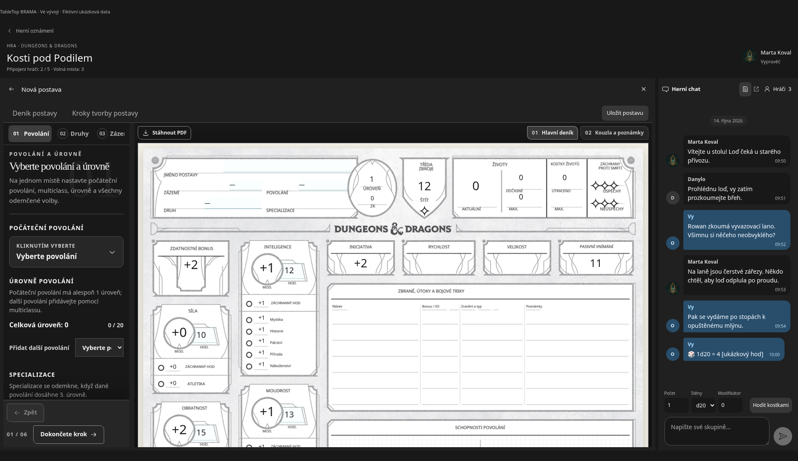
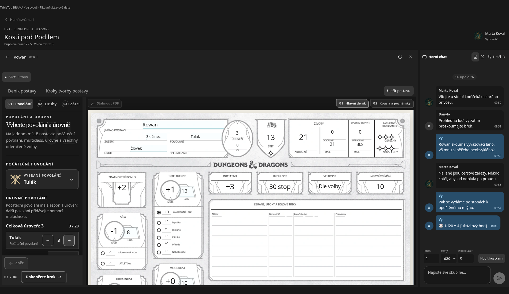
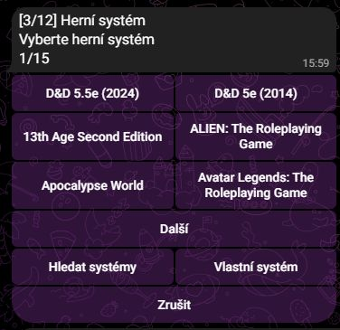
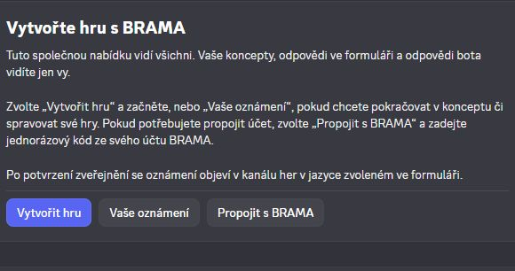

Co se změnilo
Upravil jsem vzhled a profily v TableTop BRAMA. Teď dopracovávám nabídky her, herní prostor a boty Telegram/Discord pro tyto nabídky.
Nově jsou k dispozici profilové karty: kliknutím na jméno nebo avatar v komentářích zobrazíte profil, role, popis a odkazy daného člověka bez opuštění stránky. Nahrávání avatarů a obálek je také optimalizované se zachováním animací.
Co právě dopracovávám:
- Nabídky her: úpravy bez ztráty přihlášek, přehlednější výběr systému a edice a termíny — přesné datum, rozmezí nebo datum po dohodě. Společný katalog pro nabídky má oddělené položky D&D 2024 a 2014.
- Herní prostor: vytvoření postavy nebo připojení existující z knihovny, deník vedle chatu a hody z deníku ve společném chatu. Dopracovávám návaznost těchto kroků.
- Boti pro nabídky her: propojení postupů v Telegramu a Discordu s BRAMA, včetně soukromého formuláře v Discordu, uložené volby jazyka rozhraní a příslušných jazykových kanálů. Práce na rozhraní botů zahrnuje ukrajinštinu, angličtinu, polštinu, češtinu a španělštinu.
BRAMA je stále ve vývoji a web ještě není veřejný. Snímky používají smyšlené ukázkové profily a obsah.
Snímky obrazovky
- Vylepšený vzhled BRAMA
- Ukázkový profil
- Profilová karta v diskusi
- Herní oznámení
- Editor oznámení
- Tvorba postavy přímo ve hře
- Deník postavy vedle skupinového chatu
- Vytváření oznámení v Telegramu
- Nástroje oznámení v Discordu
Vylepšený vzhled BRAMA
Vylepšený vzhled BRAMA: příspěvky, navigace a média na jednom místě.

Ukázkový profil
Vylepšený profil s úvodním obrázkem, avatarem, rolemi a vlastní nástěnkou.

Profilová karta v diskusi
Kliknutím na jméno nebo avatar zobrazíte kartu profilu, aniž byste opustili diskusi.

Herní oznámení
Ilustrované oznámení se systémem, edicí, časem, volnými místy a tlačítkem přihlášení. Smyšlená ukázková hra.

Editor oznámení
Úprava ukázkového oznámení s viditelným systémem, edicí, počtem hráčů a náhledem. Tento postup se stále dolaďuje.

Tvorba postavy přímo ve hře
Tvorba postavy D&D s listem viditelným vedle nastavení a herního chatu. Ukázka vyvíjené platformy.

Deník postavy vedle skupinového chatu
Úprava postavy D&D přímo ve hře. List a rozhovor skupiny zůstávají vedle sebe. Fiktivní ukázková data.

Vytváření oznámení v Telegramu
Výběr systému v botu pro Telegram: samostatné položky D&D 2024 a 2014, vyhledávání a možnost vlastního systému.

Nástroje oznámení v Discordu
Nabídka bota pro Discord pro vytváření her, pokračování v konceptech a propojení s BRAMA. Odpovědi ve formuláři a odpovědi bota vidí jen osoba, která tento postup používá.
